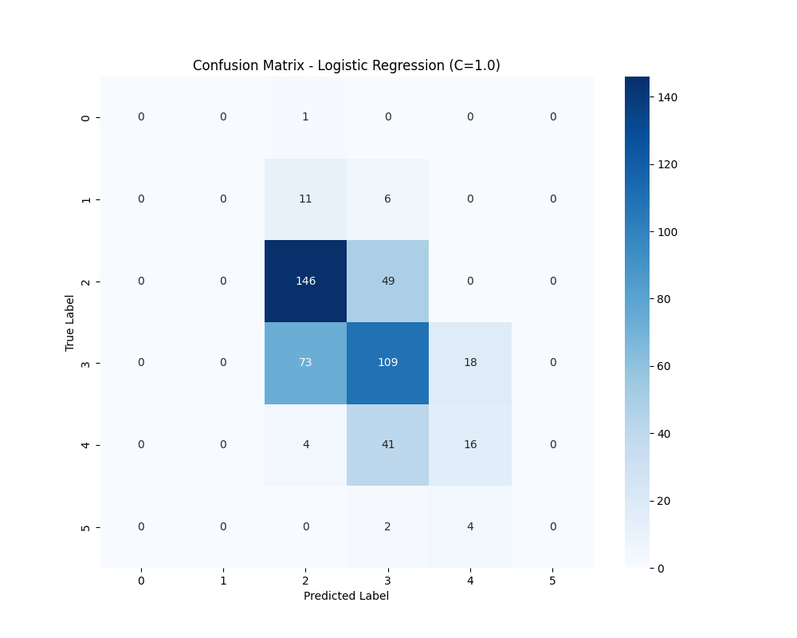
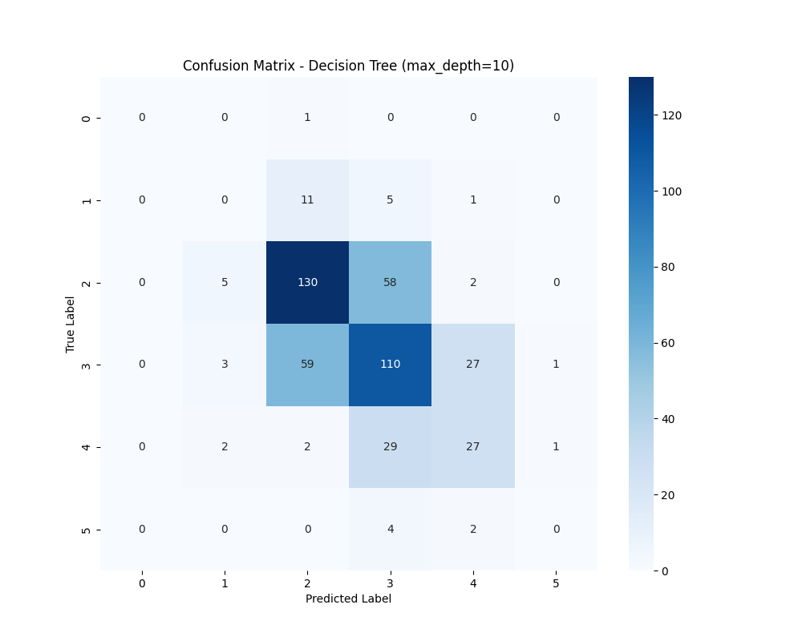
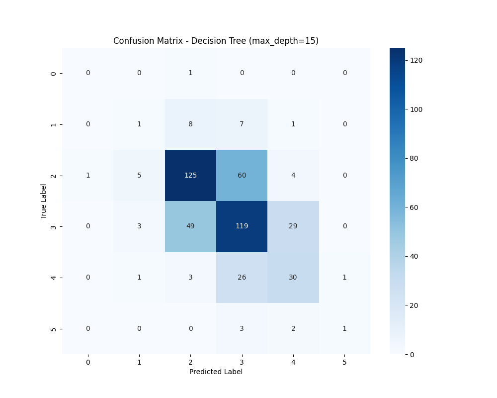

Generated on: 2024-12-23 13:47:49
Experiment ID: 20241223134749
В этом эксперименте сравнивается производительность различных моделей машинного обучения на наборе данных о качестве вина. Среди тестируемых моделей:
Использовались следующие гиперпараметры:
| Model | accuracy | precision | recall | f1_score |
|---|---|---|---|---|
| Logistic Regression (C=1.0) | 0.5646 | 0.5253 | 0.5646 | 0.5401 |
| Logistic Regression (C=0.5) | 0.5667 | 0.5277 | 0.5667 | 0.5420 |
| Decision Tree (max_depth=10) | 0.5562 | 0.5408 | 0.5562 | 0.5484 |
| Decision Tree (max_depth=15) | 0.5750 | 0.5712 | 0.5750 | 0.5713 |
| Модель | Время выполнения (сек) | Статус | Параметры |
|---|---|---|---|
| Logistic Regression (C=1.0) | 3.88 | FINISHED |
Показать параметры
|
| Logistic Regression (C=0.5) | 3.16 | FINISHED |
Показать параметры
|
| Decision Tree (max_depth=10) | 3.40 | FINISHED |
Показать параметры
|
| Decision Tree (max_depth=15) | 3.33 | FINISHED |
Показать параметры
|
precision recall f1-score support
3.0 0.00 0.00 0.00 1
4.0 0.00 0.00 0.00 17
5.0 0.62 0.75 0.68 195
6.0 0.53 0.55 0.54 200
7.0 0.42 0.26 0.32 61
8.0 0.00 0.00 0.00 6
accuracy 0.56 480
macro avg 0.26 0.26 0.26 480
weighted avg 0.53 0.56 0.54 480

precision recall f1-score support
3.0 0.00 0.00 0.00 1
4.0 0.00 0.00 0.00 17
5.0 0.62 0.75 0.68 195
6.0 0.53 0.55 0.54 200
7.0 0.43 0.26 0.33 61
8.0 0.00 0.00 0.00 6
accuracy 0.57 480
macro avg 0.26 0.26 0.26 480
weighted avg 0.53 0.57 0.54 480
precision recall f1-score support
3.0 0.00 0.00 0.00 1
4.0 0.00 0.00 0.00 17
5.0 0.64 0.67 0.65 195
6.0 0.53 0.55 0.54 200
7.0 0.46 0.44 0.45 61
8.0 0.00 0.00 0.00 6
accuracy 0.56 480
macro avg 0.27 0.28 0.27 480
weighted avg 0.54 0.56 0.55 480

precision recall f1-score support
3.0 0.00 0.00 0.00 1
4.0 0.10 0.06 0.07 17
5.0 0.67 0.64 0.66 195
6.0 0.55 0.59 0.57 200
7.0 0.45 0.49 0.47 61
8.0 0.50 0.17 0.25 6
accuracy 0.57 480
macro avg 0.38 0.33 0.34 480
weighted avg 0.57 0.57 0.57 480

Лучшая модель: Модель дерева решений с `max_depth=15` достигла наивысших значений accuracy (0.575), precision (0.5712), recall (0.575) и f1_score (0.5713), что делает ее самой надежной моделью в этом эксперименте.
Логистическая регрессия: Эта модель показала относительно низкую производительность в сравнении. Изменение параметра регуляризации `C` не оказало существенного влияния на ее производительность, что говорит о том, что она может быть не самой лучшей моделью для данного набора данных.
Эффект глубины дерева решений: Увеличение max_depth дерева решений с 10 до 15 улучшило все показатели производительности, указывая на то, что при меньшей глубине модель была недостаточно приспособлена.
Время обучения моделей: Логистическая регрессия с C=1.0 требует значительно больше времени на обучение (4.8 секунд) по сравнению с другими моделями. Интересно отметить, что уменьшение параметра регуляризации C до 0.5 существенно сократило время обучения до 2.9 секунд. Деревья решений показали стабильное время обучения около 3 секунд независимо от глубины (max_depth=10 или max_depth=15), что делает их не только более эффективными по метрикам качества, но и достаточно быстрыми в обучении.